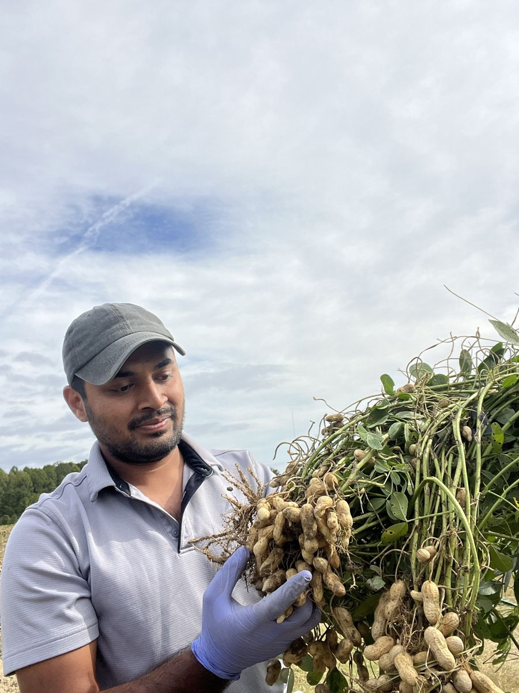
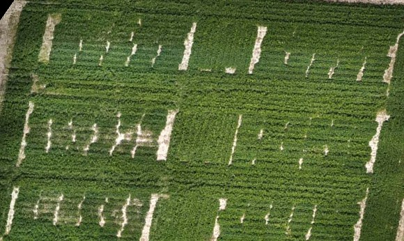
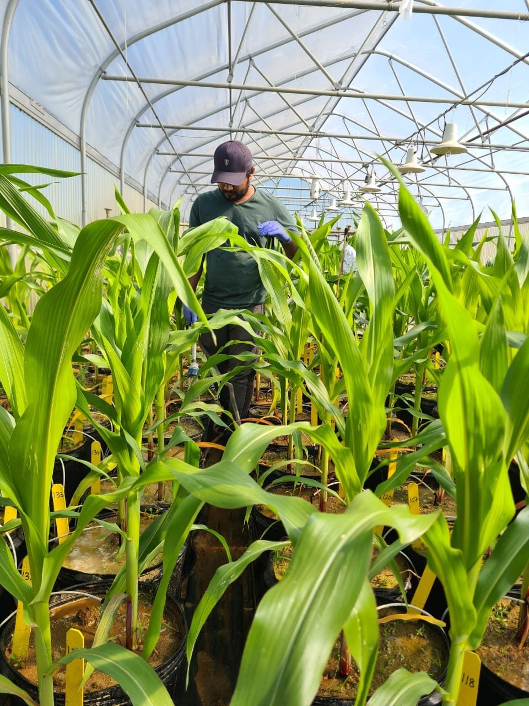
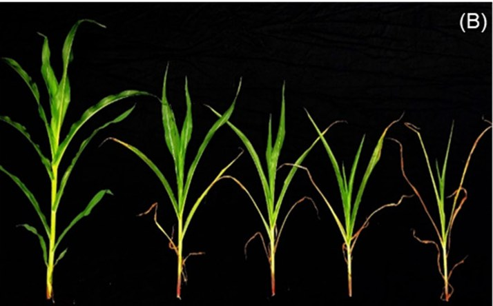
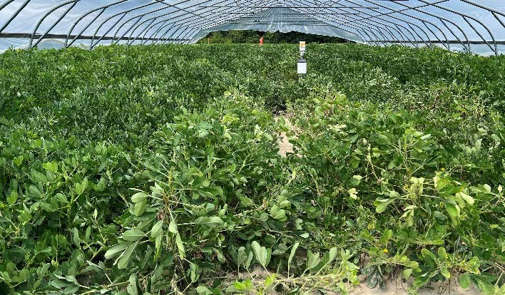
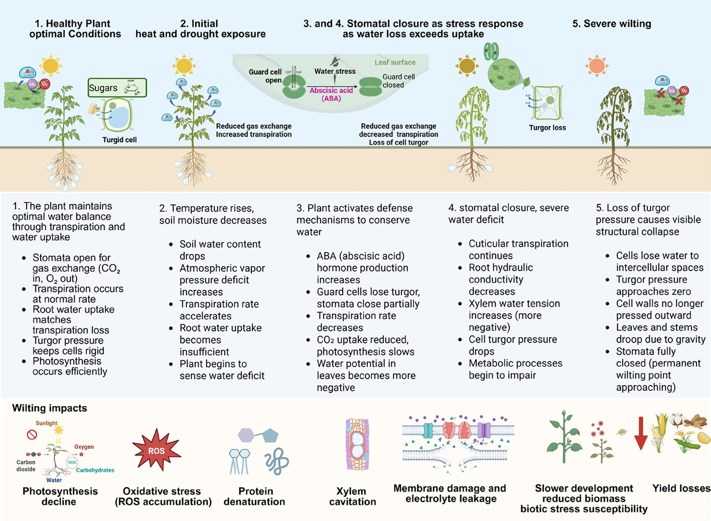
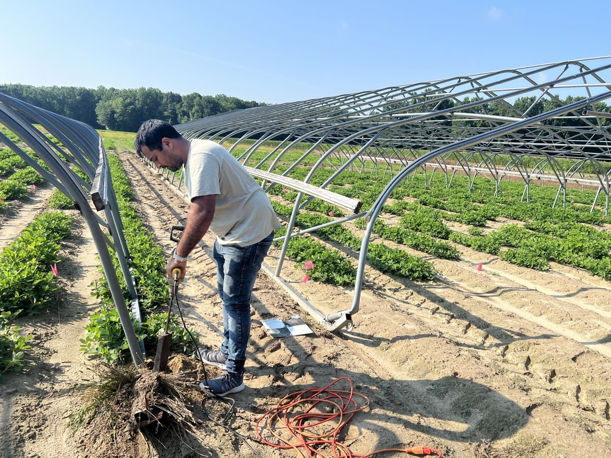
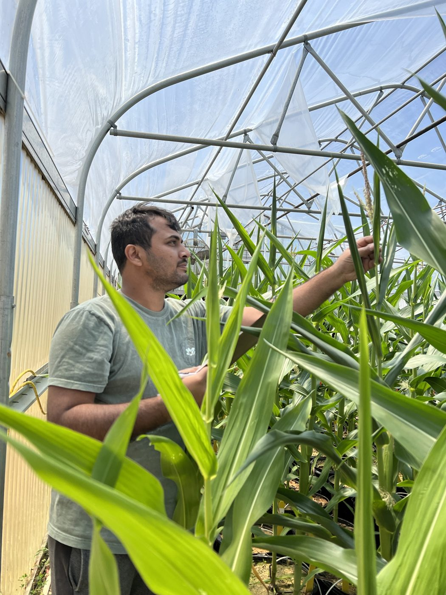

Crop stress physiologist · Virginia Tech
Ranadheer Reddy VennamPh.D.
A season’s yield is decided in a few weeks around flowering. I study what heat and drought do in that window, what they cost growers, and how to see the damage from the air.
Movable rainout shelters over the 2024 peanut trial
per acre of crop value lost to heat plus drought
peanut · 2024 & 2025
of peanut pod yield lost to a hot, dry mid-season
rainout shelters · Tidewater AREC
drone prediction of wilting in a season the model never saw
spectral bands only
drone-imaged plots in 12 environments
3 locations · VA & NC · 2023–25
peer-reviewed papers, 8 as first author
incl. 1 in press · 2 in revision

Field first
Research that starts in the plot and ends with the grower
I am a Research Assistant at Virginia Tech’s Tidewater Agricultural Research and Extension Center. My work follows one thread across corn, soybean, cotton, and peanut: what heat and drought do around flowering, and how much that costs.
Movable rainout shelters let me impose a hot, dry mid-season on purpose. Drone imagery lets me see it across thousands of plots. Yield, grade, and net returns turn it into dollars per acre.
Four questions, asked in sequence
From when stress hits to what it costs

“Peanut pods form underground, so canopy wilting is one of the few visible signs of reproductive stress.”
Drone image of the 2024 trial, 70 days into stress · VCE SPES-672
How a drone scores itTry it
Heat the canopy
Move across the plants to add heat. Leaves lose turgor and fold, then recover when the heat passes. The readout scales to the maxima measured in my trials.
2026 · Award
Gerald O. Mott Award
Crop Science Society of America.
2025 · For growers
Extension publication SPES-672
The cost of mid-season heat and drought, in pounds and dollars per acre.
2025 · Award
Outstanding PhD Student
Association of Agricultural Scientists of Indian Origin.
Research · 2021–2026
Where each study sits in the crop’s life
Most of my work targets the reproductive window, when pollen is shed, silks or pegs are fertilized, and the plant fixes how many seeds it will try to fill. Drought closes stomata to save water, which removes the plant’s main way to cool itself just as temperatures peak. Click a bar to open the study.
The projects
Each answered a gap the last one exposed
Next
From describing stress to anticipating it
Predict stress before it costs yield
Pair season-independent drone models with weather, soil-moisture data, and stage-specific response functions to warn growers and variety testers in-season, and test how the models transfer to new crops, sensors, and regions.
Breed for the combination
Because tolerance to one stress does not predict tolerance to both, work with breeders to screen advanced lines under combined heat and drought, timed before stress erases genotype differences.
Connect mechanism to phenotype
Link gene expression in stressed peanut leaves (dissertation chapter in preparation) to wilting, gas exchange, and reflectance, giving breeders traits they can select directly.
Funding path: regional trials that growers and commodity boards ask for, then multi-state USDA NIFA proposals built on those data, with seed and ag-technology partners. Grant experience so far: helped my advisor develop a USDA Specialty Crop Research Initiative proposal on chickpea, and now plan and manage Virginia Tech’s field trials on a $2.7M, five-university USDA faba bean project.
Physiology
Leaf gas exchange, canopy and leaf temperature, relative water content, chlorophyll and photosystem II efficiency, pollen germination and silk development, leaf wilting scoring.
Stress environments
Rainout shelters, growth chambers, SPAR chambers (heat, drought, salt, chilling, elevated CO₂), soil-moisture and salinity dose-response designs.
Sensing and data
Drone multispectral and thermal imagery (FAA Part 107), vegetation indices, leaf reflectance, machine learning with leave-one-year-out validation.
Field and economics
Trial design and management, in-season monitoring, harvest and peanut grading, yield, crop value, and net-return analysis; soil sampling.

When does water stress do the most damage to corn?
Crop models and irrigation thresholds need yield expressed as a function of stress intensity at specific stages, not a single stressed-versus-control contrast.
What I did
I co-designed and ran a study of the dryland hybrid A6659 in 200 large pots of field soil, holding soil moisture at five levels (0.25 to 0.05 m³/m³) for 14 days at flowering or during grain fill, with 20 replications per level. I tracked ear-leaf gas exchange, reflectance indices, silk growth, and kernel set. Three further studies of my own added a seven-day drought with rewatering, and early-season response curves for water deficit and for salinity (two hybrids, two independent experiments each, 26 traits in the salinity study).
Why it matters
The stages fail by different routes: flowering stress acts on kernel number, while grain-fill losses trace to a declining ear leaf. The early-season curves are continuous, so they can go straight into crop models. The work is cited in studies of stage-targeted irrigation, satellite-based drought impact, and index-based corn insurance design.

- −53%kernel number after 14 days of drought at flowering; kernel weight fell 54%.
- −46%leaf chlorophyll after just seven days of drought. Unlike canopy temperature, it did not recover after rewatering.
- 3 dS/msalinity tolerance threshold for early-season maize. At 12 dS/m, height fell 47% and canopy temperature rose about 4 °C.
- 0.22→0.52root-to-shoot ratio as the soil dried (R² = 0.90): plants shifted biomass toward roots.
- −85%leaf area at the driest early-season level; shoot mass fell 74% and root mass 43%.
MS-era · Mississippi State, 2021–2023

Is heat plus drought just the sum of its parts?
Most breeding screens impose one stress at a time, in growth chambers. In the field, heat and drought arrive together. Do chamber screens hold up?
What I did
At Mississippi State I contributed to three collaborative studies on maize and soybean under combined stress. At Virginia Tech I designed paired experiments on five high-oleic Virginia-type peanut cultivars: growth chambers under control, heat, drought, and combined stress (100 experimental units), and the same cultivars in the field under rainfed conditions or rainout shelters (40 plots). I then followed combined stress through two full seasons on 12 genotypes at Tidewater AREC.
Why it matters
Chambers exaggerate how large the response is, but they still pick the resilient cultivars. That tells breeders how to use chamber screens and where their limits lie. Prolonged field stress erased genotype differences, so screens are most informative before stress becomes extreme.
- −93%soybean stomatal conductance under heat and drought together, against 62% for drought and 10% for heat alone. Tolerance to one did not predict tolerance to both.
- −79%maize yield under combined stress at grain fill, with leaf temperature up 5.6 °C (Plant Stress 2022; I analyzed the data and co-wrote).
- 65 vs 21%drop in peanut stomatal conductance in the chamber versus the field under the same combined stress.
- NC 20and Sullivan kept the highest gas exchange in both settings, so chamber rankings carried over to the field.
- +6 °Cpeanut canopy temperature under shelters, with stomatal conductance down up to 69% (manuscript in revision).
MS-era · Mississippi State, 2021–2023
Can a drone score stress in a season it has never seen?
Peanut pods form underground, so canopy wilting is one of the few visible signs of reproductive stress. It is scored by eye, one plot at a time.
What I did
I designed and led drone multispectral monitoring at three locations (Suffolk, Virginia; Rocky Mount and Williamston, North Carolina) over 2023–2025: 12 environments, 12 to 34 genotypes per trial, and about 3,190 plots, eight of the environments inside the regional peanut variety-testing program. I paired the imagery with 9,387 plot-level wilting scores and compared four algorithms (k-nearest neighbors, random forest, XGBoost, neural network) with leave-one-year-out validation: each season was predicted only from the other two. I hold an FAA Part 107 remote pilot certificate.
Why it matters
Many crop-stress models are tested on random plot splits from the same seasons, which overstates how well they will work next year. Testing on whole unseen seasons is the problem a variety-testing program actually faces.

- R² 0.89neural-network prediction of wilting in a withheld season (2024), from spectral bands alone; 0.85 in 2025.
- 4,647quality-screened plot observations, from 9,387 collected.
- ρ 0.74correlation of red reflectance with wilting; near-infrared and every vegetation index fell as wilting rose.
- 8 / 12environments run inside the regional peanut variety-testing program, where the models would be used.
Wilting predicted in unseen seasons
Leave-one-year-out R², spectral bands only
PhD · Virginia Tech, 2023–2026

What does a hot, dry mid-season cost a peanut grower?
Virginia-type peanuts are sold on grade, so yield alone understates what stress costs.
What I did
I led two seasons of trials on 12 genotypes (five commercial cultivars, six University of Florida breeding lines, and a tolerant Spanish-type check), with movable rainout shelters over half the plots for 65 to 70 days from flowering to early seed fill, in a split-plot design with four replications. I measured pod yield, grade, gross crop value, and net returns under four production-cost scenarios.
Why it matters
Growers get a measured cost of a hot, dry mid-season. Breeders get a ranked set of advanced lines under realistic stress. I wrote the 2024 results up for growers, in pounds and dollars per acre, as a Virginia Cooperative Extension publication.
- −52%pod yield under combined stress in 2024, and −73% in 2025.
- $770gross crop value lost per acre in 2024 ($680 in 2025). Net returns went negative at every production-cost level in both years.
- 8.2 t/hatop rainfed yield, from breeding line 14x009-1-5-1-1, which also stayed comparatively high under stress.
See the full yield and value chart on the Impact page, or play the season in the simulator.
PhD · through a season of peanut trials
Interactive · peanut, Tidewater AREC
A season under the shelter
Drag through a Virginia peanut season. Switch the shelter on, and from flowering to early seed fill the plot loses its rain. Each gauge climbs toward the largest effect I measured in the 2024–2025 trials.
How to read this: the peaks are measured maxima from my trials (in 2024, soil water −60% and average daily air temperature +4 °F; under the shelters, daytime highs up to 8–9 °C above rainfed plots, canopy temperature up to +6 °C, stomatal conductance down up to 69%, wilting scores of 2–3, and pod yield −52% in 2024). The day-by-day curves between those points and the plant drawing are illustrative, not data. Stage timing is approximate.
Impact
What the work means in the field
Each project ends in something a grower, breeder, or variety tester can act on: a cost per acre, a ranked line, a stage to protect, or a stress score from the air.
gross peanut crop value lost per acre to heat plus drought in 2024 ($680 in 2025).
production-cost scenarios with negative net returns under heat plus drought, in both years.
pod yield lost under rainout shelters from flowering to early seed fill (2024 and 2025).
drone prediction of wilting in an unseen season, across 8 variety-testing environments and 4 others.
Who can use it, and how
Practical outputs of each project
- GrowersA measured cost of a hot, dry mid-season: $680 to $770 per acre in gross value, with net returns negative at every production-cost level. Written up in pounds and dollars per acre as Virginia Cooperative Extension SPES-672.
- BreedersTwelve genotypes ranked for yield, grade, and value under realistic field stress. Breeding line 14x009-1-5-1-1 gave the top rainfed yield (8.2 t/ha) and stayed comparatively high under stress.
- Variety testersDrone models that score canopy wilting in a season they were never trained on, an alternative to scoring by eye, plot by plot. Built inside the regional peanut variety-testing program.
- CornStage-resolved drought and salinity response curves that show when water stress does the most damage, so irrigation can be timed to the stages that matter.
Peanut pod yield
t/ha · 12 genotypes · Tidewater AREC
Where others have built on it
Uses in follow-on studies and coverage
- CornStage-targeted supplemental irrigation, satellite drought-impact studies, and index-based corn insurance design (Land Use Policy).
- ModelsSoil moisture in machine-learning corn yield prediction (Agricultural Water Management) and field-scale yield models (Field Crops Research).
- SalinityThermal and RGB imaging with neural networks to assess wheat salt tolerance in the field.
- MediaCorn drought research featured in an ASA-CSSA-SSSA news release, covered by Phys.org and Strip-Till Farmer.
Publications
Peer-reviewed work
Each entry lists my role as stated in the paper’s author contributions. Filter by authorship, status, or crop.
Gallery
In the field, the lab, and the room
Photos from my MS at Mississippi State and my PhD at Virginia Tech, plus figures from my papers. Click any image to open it; use the arrow keys to move through them.
Extension, mentoring, recognition
The work outside the paper
Growers trust results they can see in fields like their own, and the best research questions come from the people who will use the answers.
Extension and outreach
- 2025Extension publication. The Toll of Mid-Season Heat and Drought on Peanut Yield and Grade in Virginia, Virginia Cooperative Extension SPES-672.
- OngoingGrowers. Discussed results and management with cooperating growers on on-farm peanut trials in Virginia and North Carolina; demonstrated heat, drought, and rainfed trials at Tidewater AREC field days.
- 2025Industry. Briefed DRS/ManiAgro (Argentina) on heat and drought effects, multispectral imagery, and machine-learning wilting maps.
- 2026Schools. Interactive drone sessions for ~110 Suffolk Public Schools students (Ag Innovation Tour); hosted Southampton Academy K-12 students.
- 2024Training. Talks at the Peanut Innovation Lab Summer Drone School and in the graduate course Advanced Topics in PPWS (rainout-shelter methods).
- 2023Media. Corn drought research featured in an ASA-CSSA-SSSA news release.
Mentoring, teaching, leadership
- 2022–Mentoring to publication. Mentored undergraduate researcher Xinyan Jian, second author on our corn drought paper; supervised summer field workers and undergraduate researchers.
- 2024Teaching. TA for World Crops: Food and Culture (SPES 2244): weekly labs for 50 undergraduates in two sections.
- 2025–26President, APRES Graduate Student Organization (Vice President 2024–25); 2025 APRES meeting planning committee.
- TrainingTrained an Agricultural Technician III and a Laboratory and Research Specialist (Virginia Tech), and a postdoctoral associate and a PhD candidate (Mississippi State), in field and physiological methods.
- 2026Session judge, CANVAS 2026 (ASA-CSSA-SSSA), Portland, OR: Precision Agriculture Community and Airborne and Satellite Remote Sensing sessions.
- ServiceReviewed 29 manuscripts for 13 journals; judged graduate and undergraduate poster contests (2022, 2023, 2025).
Recognition
- 2026Gerald O. Mott Award, Crop Science Society of America
- 2025Outstanding PhD Student, Association of Agricultural Scientists of Indian Origin
- 2025Selected mentee, Bayer Crop Science B4U University Mentoring Program
- 2024Outstanding Alumni Award for Excellence in Research, Lovely Professional University
- 2024Bruce W. Perry Scholarship, School of Plant and Environmental Sciences, Virginia Tech
- 2022–26Ten poster awards at national and regional meetings, four of them first place
Training and positions
- 2026–Research Assistant, Crop Physiology Lab, Tidewater AREC, Virginia Tech. Faba bean variety, planting-date, and nitrogen-rate trials on a $2.7M USDA project.
- 2026Ph.D., Plant Pathology, Physiology and Weed Science, Virginia Tech (GPA 4.0). Dissertation on peanut (Arachis hypogaea L.) responses to heat and drought. Advisor: Maria Balota.
- 2023MS, Agronomy, Mississippi State University (GPA 4.0). Thesis on soil moisture stress across corn growth phases. Advisor: Raju Bheemanahalli.
- 2019–21Quality Specialist, Amazon Development Center: high-volume geospatial data validation.
- 2019BSc (Hons.) Agriculture, Lovely Professional University, India (9.54/10).
Talks, posters, and awards

Open to postdoc, research scientist, faculty, and industry R&D roles
Let’s talk about your program
Crop physiology, stress phenotyping, and applied field research. Based in Virginia and open to relocation. Full CV and references on request.
- ranadheerv@vt.edu
- ORCID
- 0000-0001-5912-7856
- linkedin.com/in/ranadheerreddy
- Based at
- Tidewater AREC, Suffolk, Virginia